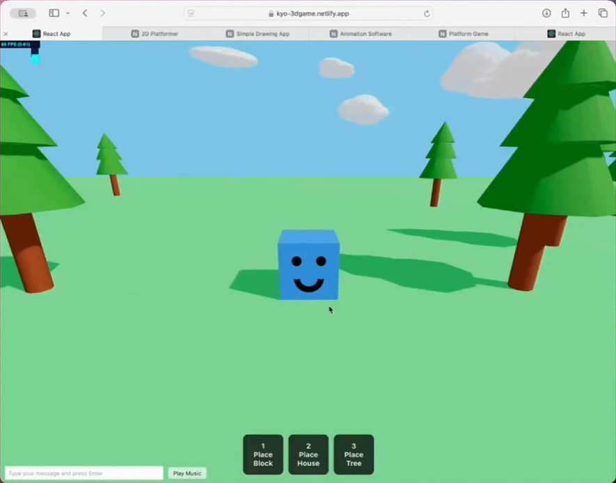

The Impact of AI on
Pamela Fox
Follow-up to "The Impact of AI on Software Engineering". Last time we ran out of time before the teaching part, so today is all about that, and it's meant to be a conversation.
About me
Pamela Fox
Principal Cloud Advocate at
Formerly: UC Berkeley, Coursera,
Formerly a CS teacher at UC Berkeley, plus Coursera and Khan Academy.
What will kindergartners need by 2043?
17 YEARS AGO
GitHub & Stack Overflow are about a year old
2009
Transformers paper: “Attention Is All You Need”
2017
GitHub Copilot, ChatGPT
2021-22
AI writes much of the code
2026
17 YEARS FROM NOW
K-4
5-8
9-12
College
</> ?
?
?
?
2026
2031
2035
2039
2043
What will software engineering look like?
To guess where we're going, start with where we are.
Start: today's kindergartners graduate college in 2043. What will software look like then? What will they need?
Click: hard to say. Look back 17 years: in 2009, GitHub and Stack Overflow were about a year old, and nobody had an AI coding assistant. Now AI writes much of the code.
Click: we can't see 2043, but we can see which way things are moving. So to guess where we're going, start with where we are: the state of software engineering today. Then the skills that matter, what changes in the classroom, and what to teach in each grade band along this timeline.
The state of software engineering
Software is built on top of AI models
Traditional code
add(2, 3)
5
5
5
Same input, same output, every time
AI-powered code
“Write a haiku
about recursion”
Recursive call sings, …
A recursion call …
Self calls in quiet …
Same input, different output
AI engineering is mostly about constraining , grounding , and evaluating that output.
Recap of section 1 from last time. Traditional code is deterministic; AI-powered code is probabilistic. Building with AI is mostly context engineering (what goes into the prompt) and evaluation (did it work?).
Software is built BY AI models
A coding agent uses an LLM to call tools that help it generate and verify code:
Task
LLM
Context
OS, settings,
memory
Code changes
call
result
Coding tools
Read & search files
Edit & create files
Run tests & commands
Fetch web pages & docs
Tools from MCP servers
A coding agent is an LLM in a loop with tools to read, edit, and run code. Huge jobs in weeks: Bun was rewritten from Zig to Rust in 11 days.
AI-written software is already the norm
Google: share of new code written by AI
GitHub: code changes started by agents
Engineers: how much of their work is done with AI
% of 900+ engineers surveyed
This isn't just possible, it's happening. Google says 75% of its new code is AI-generated and approved by engineers, up from 25% in October 2024. On GitHub, more than 40% of pull requests (proposed code changes) start with an agent's first draft as of September 2026, up from 17% in March: 110 million in September alone. In the Pragmatic Engineer's survey of 900+ engineers (March 2026), 56% do 70% or more of their work with AI, only 25% do less than 40%, and 55% regularly use agents. (The 19% middle bucket is derived: 100 minus 25 minus 56.)
Software engineers manage multiple agents
Before coding agents
Feature A
Design
Build
Test
Feature B
Not started
Feature C
Not started
You: the engineer
After coding agents
Feature A
Agent working
Ready for review
Feature B
Agent working
Needs input
Feature C
Write the spec
Agent working
You: the engineering manager
“I have 5 terminal tabs… I also run 5-10 Claudes on Claude Web, in parallel with my local Claudes.”
See also: Nicholas C. Zakas, “Five software engineering roles for working with AI”
Engineers run 5-10 agents at once: start, observe, unblock, review. The skills that matter most for this: context engineering, multitasking, and reviewing and verifying outputs.
Building software keeps getting easier
2020s English “Add up all the scores”
Anyone who can describe it 1990s Python total = sum(scores)
Students and hobbyists 1970s C total += scores[i];
Professional programmers 1950s Assembly ADD EAX, [EBX]
Trained specialists 1940s Machine code 00000011 00000011
A handful of experts
Each layer hides the one below and lets more people build. Same task at every level: add up the scores. Grace Hopper was told computers "could not do programs", and FLOW-MATIC was mocked for using English words. Now English really is the top layer, so anyone who can describe what they want can build it.
But CACM calls this layer a flaky compiler: every compiler below it is deterministic; this one is ambiguous, makes mistakes, and gives different output each time. Keep that in mind for the next two slides.
Anyone can build software now
A journalist
“I am not a coder. I can’t write a single line of Python, JavaScript or C++. … And yet, since late 2024, I’ve been coding up a storm!”
— Kevin Roose, NYT tech columnist, in “Not a Coder? With A.I., Just Having an Idea Can Be Enough” (Feb 2025)
🎧 Podcast summarizer Summarizes long podcast episodes
🚗 Will It Fit? Will this object fit in my trunk?
🥪 LunchBox Buddy What to pack for my son's school lunch
An 8-year-old
“My 8yo son built a Three.js site with zero coding experience … 2 platformer games, a drawing app, an animation app and an AI chat app. ~2 hours spent on each.”
— Meng To, his dad, on X (Sept 2024)

Neither of these people is a software engineer. Kevin Roose built small personal tools for his own life. Meng To's son built games for fun, about 2 hours each; his dad only helped set up Cursor, Git, and Netlify. This is personal software: faster to build it than to find it. But building something that works well, safely, still takes CS thinking.
But is the software actually good?
Can be checked automatically
Do the tests pass? Does it compile? Does it match the expected output? Agents excel here.
Takes judgment
Is it well tested? Is it secure? Is it maintainable? Do the pieces fit together? Agents are weakest here.
0 of 15
agent PRs that passed the tests were mergeable as-is
45%
of AI-generated code samples failed security tests
~30%
more outages at companies using AI heavily, with features shipped flat
Sources: METR (Aug 2025) ; Veracode (July 2025) ; Titus Winters on The Pragmatic Engineer
Agents (and journalists, and 8-year-olds) can produce working software fast. But is it actually good?
Agents improve fastest on what can be checked automatically, and are weakest on what takes judgment. They also struggle more as changes span more files (SWE-Bench Pro). Titus Winters hears the same from many companies: code output up hugely, outages up about 30%, features shipped flat.
So the job is shifting from software engineering to product engineering: humans are most needed at the start and end of the lifecycle, figuring out what to build and checking that it's what people meant. We'll see that lifecycle again in the skills section.
The skills that matter now for software engineering
Skills that got deprecated
2000s
IntelliSense
↓
Memorizing APIs
2008+
Stack Overflow & open source packages
↓
Solving every problem from scratch
2021+
AI autocomplete
↓
Syntax recall
2025+
Coding agents
↓
Writing code
Each tool freed us up for harder problems .
In code, "deprecated" means still around, but on its way out.
Maybe even code reading. CACM: "Tracing does not scale." Counterpoint for discussion, Jamie Maguire: "You can't review what you don't understand." But understanding may come from knowing how programs work, not from reading every line.
Skills you still need: building software
1. Understand the problem
🧑🏽
2. Write the spec
🧑🏽
3. Design the system
🧑🏽
4. Manage the agents
🧑🏽
5. Write the code
🤖
6. Write the tests
🤖
7. Review the work
🧑🏽
🤖
8. Ship it
🧑🏽 🤖
9. Scale & operate
🧑🏽 🤖
10. User testing
🧑🏽
🧑🏽 = humans lead 🤖 = mostly done by agents iterate
Agents write the code, but these skills haven't gone away. Most matter more now, because they're what agents are weakest at.
Problem design: understand who it's for and what they need, then describe it precisely. System design: high-level architecture; agents are weakest here. Managing agents: starting, steering, unblocking, and reviewing several agents at once. Verification: check the output, not the code: tests, edge cases, evals, security. User testing: does it do what people meant?
Skills you still need: verificationFor coding agents to produce quality software, every aspect must be verified. For a quiz app:
👆 End-to-end Clicks through the quiz
🔗 Integration Score saves to the database
🧩 Unit check_answer() works
🔍 Static Type checker catches typos
The Testing Trophy, Kent C. Dodds
Edge cases
🎲 Property tests Score is always between 0 and 10, for any answers
💥 Fuzz tests Answers with emoji, or 10,000 characters
Safe and fast
🔒 Security tests Can a student change their score in the URL?
⏱️ Load tests 300 students take the quiz at once
Guaranteed correct
📐 Formal proofs A Lean proof that scoring is right for every input
Verification is the skill that matters most when agents write the code, so let's unpack it, with a simple quiz app as the example (it comes back later in the classroom section).
Kent C. Dodds' testing trophy: static checks (types, linters) at the base, unit tests as the stem, integration tests as the big bowl (his advice: "Write tests. Not too many. Mostly integration."), and end-to-end tests on top. With agents, I'd push even further toward the top: agents happily write unit tests that pass while the app is still broken. An end-to-end test drives the real app the way a user would (for example with Playwright), so it checks what people actually care about.
Edge cases: property-based tests (like Hypothesis in Python) and fuzz tests find the inputs no one thought to write down.
Safe and fast: security and load tests catch what agents most often miss.
Guaranteed correct: formal proofs, like in the Lean language, prove code is correct for every possible input. They used to be too expensive for most software, but AI models are getting good at writing proofs, so they may become practical.
Skills you still need: understanding the machine
🖥️
How computers work
Memory, networks, databases, and the hardware underneath, from code down to the CPU and GPU.
So the machine isn't a black box, and you know what's possible.
🎲
How AI works
Same question, different answers. Learns from data, inherits its biases, can be confidently wrong.
So you know when to trust AI, at any age.
How computers work: you can't judge agent output, or know what's possible, if the machine is a black box. How AI works: everyone uses AI systems long before they build anything, so this is for every student, not just future engineers.
Skills you still need: product judgmentWhat sets the best engineers apart:
⚖️
Judgment Is this the right approach? Should it ship?
🎯
Prioritization What matters most next, and what isn't worth doing?
🚀
Agency Running with ideas, without being asked
✨
Taste Knowing what “great” looks like
These build on the foundation: you can't have taste in architecture without knowing system design, or judge an approach without knowing how computers and AI work. They grow mostly through open-ended projects with real choices, so they show up more in 9-12 and college. Open question: can we teach these directly, or do they come from lots of projects and feedback? (Find a source for this list before the talk.)
Skills you still need: working with peopleSoftware is built with and for people. Agents don't change that.
🤝
Collaboration Building with a team: splitting up work, pairing, and reviewing each other's (and agents') work
🗣️
Communication Explaining and defending your decisions, in writing, in demos, and in conversation
💬
Feedback Giving kind, specific feedback, and taking it well
Collaboration and communication: building with a team, giving and receiving feedback, and explaining and defending your decisions. Software is built with and for people, and agents don't change that. In fact, with agents doing more of the typing, more of an engineer's job is coordinating with people.
What changes in the classroom
A quiz app project, before and after AI
State Capitals Quiz
Question 3 of 10
What is the capital
of California?
Los Angeles
Sacramento ✓
San Francisco
San Diego
Score: 3 / 3
Before AI: a 4-week unit
Syntax & variables
Loops & conditionals
Getting it to run
Debugging & polish
Week 1 Week 2 Week 3 Week 4 After AI
Agent builds it: 5 minutes
?
A classic unit project. Then: weeks of syntax, loops, and getting it to run; most of the learning was getting code onto the page. Now: an agent builds a working quiz app in five minutes. So what do students do with the rest of the unit? The rest of this section: the learning moves to before and after the code.
Quick question for the table: has anyone seen a student turn in a project an agent built in minutes?
Shift 1 of 5
From writing code to describing what you want
Before AI
def ask(question, answer):
guess = input(question)
if guess == answer:
score += 1
After AI
Quiz app for Ms. Lee's 3rd graders
10 state capitals, one at a time Big buttons, reads questions aloud Shows the score at the end Example: “Capital of California?” → Sacramento
In class: write the spec and examples before anyone, human or agent, writes code.
What students write for an agent is a specification: who it's for, what it should do, examples, and constraints. Natural language is ambiguous, so vague descriptions get vague results. Precision is the skill.
Shift 2 of 5
From “it runs” to “it’s verified”
Before AI
$ python quiz.py
What is the capital of CA?
✓ It runs!
After AI
What if they type “sacramento”? What happens on a wrong answer? Does it work with a screen reader? Is the student data safe? Is there an end-to-end test?
In class: write the tests (especially end-to-end), run bug hunts, and check accessibility on agent-built apps.
Getting it to run used to be the finish line. Now it's the starting line. Callback to the verification slide: edge cases, security, accessibility, and end-to-end tests that check the whole app works.
Shift 3 of 5
From the autograder to real users
Before AI
Student → assignment → autograder
Built for the teacher's rubric, not for a real person.
After AI
Interview the user
→
Build with an agent
→
Test with the user
→
Iterate
Users: a classmate, a teacher, a school club, a family member.
In class: interview the user first, test with them at the end, iterate.
An assignment with no user has no way to tell if it's good, only if it runs. Build for a real person.
Shift 4 of 5
From grading code to grading decisions
After AI
Spec and examples 25% Tests 25% Design diagram 25% “Why I built it this way” 25%
In class: demos and short oral explanations: “Walk me through why you built it this way.”
If an agent can write the code, the code alone doesn't show what a student learned. Grade the specs, tests, design diagrams, and explanations of why. Titus Winters makes the same point: grade students' prompts and tests, not just their code.
Shift 5 of 5
From AI-proof to AI-assumed assignments
Before AI
🔒
“No AI allowed.” Hard to enforce, and not how software is built anymore.
After AI
✅ Use agents to build it ✅ Disclose how you used them ✋ By hand: the concepts you need a mental model for 💪 Still hard: deciding, designing, verifying
In class: be clear about when AI is expected, when it's not, and how to disclose it.
Trying to keep AI out of assignments is a losing battle, and it doesn't prepare students for how software is built. Design assignments that assume students use AI, and are still hard: the challenge is in deciding, designing, and verifying.
A curriculum diff for CS teachers
Most of what you teach stays. Here’s what shifts:
Change When and how much students write code by hand What we grade: decisions, not just code Who students build for: real users, not the autograder Add How AI works Writing specs Verification User testing Product judgment Agentic coding Drop (or shrink) Syntax drills Memorizing APIs Multiple coding languages
Summary of the shifts. Next: what this looks like at each age.
Skills grow across the grades
K-4
Understand the AI you already use
5-8
Build for someone else
9-12
Build real software for a real client
College
Go deep: from users down to the CPU
Every skill shows up at every level, from a playful version to a professional one.
Each band builds on the last. Two slides per band: the emphasis for that age, then how the other skills show up.
K-4: Understand the AI you already use
Kids talk to voice assistants and see AI-generated images long before they build anything.
🐶
AI learns from examples Train an image classifier as a class, then show it something it never saw.
🎲
AI guesses Unplugged: build a story by drawing the next word from a bag. Compare stories.
🤔
AI can be wrong Ask a chatbot (teacher-led) a question the class already knows.
⚖️
AI can be unfair We only trained it on one kind of dog. What happens with other dogs? Who gets left out?
Code.org AI for Oceans (grades 3+) · How AI Makes Decisions (grades 3-5)
AI tools at this age: teacher-led, whole-class demos only. Most AI tools require users to be 13+. People decide what to trust, and when to ask a grown-up.
K-4: Say exactly what you mean
Problem design Give precise instructions, then watch someone follow them literally.Kidbots .
User feedback Build something for a partner: is this what they wanted?Chocolate Factory .
Programming basics Sequences, loops, and conditionals.LEGO SPIKE Essential
How computers work Inputs, outputs, and stored information.Binary numbers .
How the web works How messages travel between computers.Orange Game .
CSTA 1A-AP-12 (develop plans), 1B-AP-13 (plan by considering user preferences), 1A-AP-08, 1A-AP-11, 1A-AP-14
5-8: Build for someone else
Interview a classmate, teacher, or family member
→
Write a spec with examples
→
Write tests including edge cases
→
Agent builds it teacher-guided
→
Compare against the spec
→
Peer test with the user
Spec: a timer for Mr. Diaz's PE class
Counts down from any time he picks Big numbers he can see across the gym Loud beep at zero Tests
Start at 1:00 → beeps at 0:00 Pause, then resume → keeps going Start at 0:00 → ? (edge case!)
CSTA 2-AP-15 (incorporate feedback from users to meet user needs), 2-AP-17 (test using a range of test cases)
5-8: Look under the hood
System design Plan with flowcharts or pseudocode. What data does it need to store?
Programming basics Block-based or Python. Mostly reading code: predict what a program will do, then run it.
Verification Find the bugs in AI-built apps by testing them
Collaboration Team projects, giving kind and specific feedback
How computers work Hardware and software, binary, how the internet sends data
CSTA 2-AP-10 (flowcharts/pseudocode), 2-IC-23 (public vs. private information)
AI tools: teacher-guided, on education platforms with age-appropriate terms. Hand-written code for core concepts.
9-12: Build real software for a real client
A semester project for a real client: a school club, a local business, a teacher.
Client interview
→
Spec requirements, examples, “done”
→
Architecture diagram + data model
→
Agents build it
→
Tests & evals security basics
→
User testing accessibility, bias
→
Demo defend your decisions
Build on an AI model
Add an AI feature with prompts, context, and embeddings. Write evals, since its output is probabilistic.
CSTA 3A-AP-19 (incorporate feedback from users), 3A-AP-21 (make artifacts more usable and accessible), 3A-AP-23 (document design decisions), 3A-IC-25 (test and refine to reduce bias)
9-12: Think like an engineer
Problem design Context engineering: what does the agent need to know to do this well?
System design Ask the agent to explain the structure it built, and compare it to your design
Data structures & algorithms Some code by hand, to build a mental model.
How computers work Memory, networks, how an app talks to a server and database
Collaboration Team roles, reviewing each other's (and agents') work
Judgment & prioritization What do we build first, and what shouldn't we build at all?
Code.org AI Foundations (9-12) · Foundations of Generative AI (9-12) · Coding with AI (6-12) · Computer Vision (6-12) · AI and the Systems that Power It (9-12)
CSTA 3B-AP-21 (test cases against design specs), 3B-AP-08 and 3B-AP-09 (AI), Practice P6: Testing and Refining Computational Artifacts
AI tools: students use coding agents directly, with a disclosure of how they used them.
9-12: Where the AP courses fit
AP CSP AP CSA
✓ – ◐ ✓ ✓ ◐ ✓ – ◐ ✓ ✓ ◐ ◐ – ✓ – ✓ –
AP CSP: more relevant
Covers the goals of both 9-12 slides: build for real users, test it, and think about impacts.
AP CSA: still useful
For students who want to see how programs work under the hood.
✓ core focus ◐ partly – not really
Callback to the two previous slides. AP CSP's Create task already asks students to describe their program's purpose and how they tested it, and its big ideas include creative development (collaboration, user feedback), data, computing systems and networks, and the impact of computing. That's most of what we just said 9-12 students need. AP CSA is mostly Java: objects, classes, data structures, algorithms. Still useful for students who want to see how programs work, but much narrower. My ratings are a judgment call, not an official mapping.
College: From users down to the CPU
Know the whole stack, all the way down
Users and their problems
Your app and its agents
AI models
OS, networks, databases
CPU, GPU, NPU
Depth is what lets you judge agent output and know what's possible.
Specs and tests from day one In the intro course. Some projects beyond what students could write by hand.
Software engineering in year one Test suites, CI, monitoring, review: not an upper-level elective
Building on AI models Context engineering, RAG, tool calling, evals
Capstones with real clients Graded on impact and process, with oral defenses
College: Go deep and go wide
Problem design Product engineering: talk to users, decide what to build
System design Architecture tradeoffs across many files and services. Design up front, build a thin end-to-end path first.
Verification Review agent output at scale, by its behavior rather than line by line
User feedback HCI, usability studies, accessibility, iterating on real user data
Algorithms & theory Algorithms, complexity, and theory
How AI works Machine learning, neural networks, how LLMs are trained
Collaboration Team projects throughout, review norms, technical writing
Managing agents Running many agents in parallel, and giving each one what it needs
Every student will build software
Whether or not they ever take another CS class:
🎙️
For their families A voice-effects app for their kids
🧁
For their jobs An order tracker for their bakery
🏫
For their communities A sign-up tool for the school club
They'll build them with AI, with or without us.work , that are fair , and that do what people meant ?
That's our job now.
Callback to personal software from the first talk: "faster to build it than to find it." Then: "So let's figure out how, together."
Let's figure it out together
Should students still write code by hand? How much, and when?
Will people still read code, or only review what it does?
What do we grade now?
When should students start using agents themselves?
How do we teach students to tell if something actually works?
What happens to students who love to code?
What do teachers need (training, tools, time) to teach this way?
Who gets access to good AI tools at school and at home?
Leave this slide up for the rest of the session. Open table discussion: start with whichever question gets the most reaction.